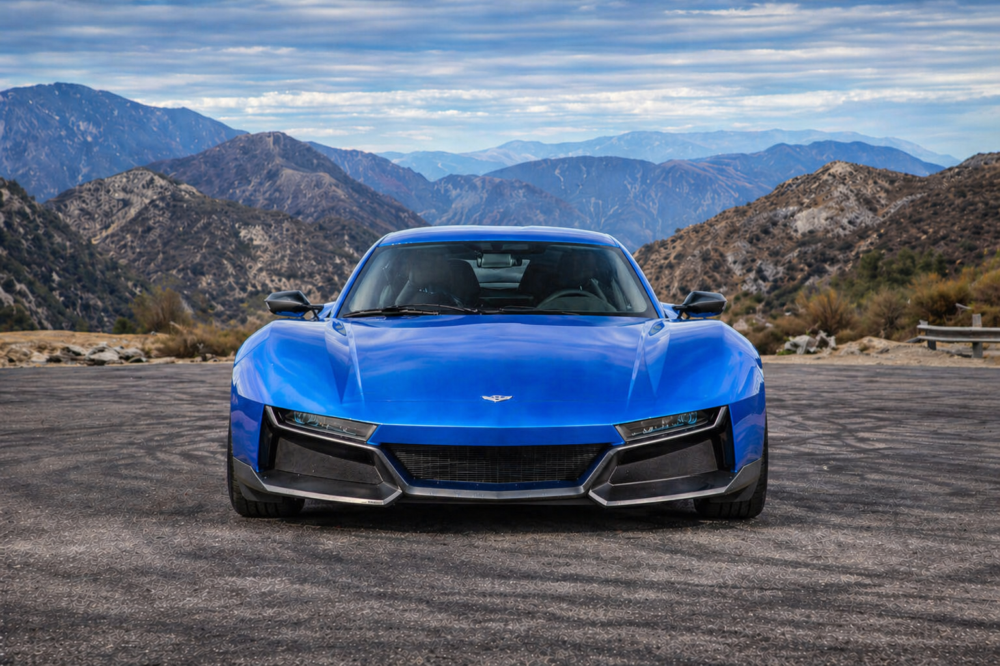

All of these cars are some of my all-time favorite cars. The Koenigsegg Jesko is allegedly the fastest street legal car in the world (there is no raceway long enough to reach its theorectical top speed of 330mph). The Rimac Nivera R is the quickest car in the world, because it is electric it allows the car to accelerate immediately skipping the gear changes and being AWD. The corvette C7 is one of the best QUIET cars so named not because they are quiet but because they are very tuneable to maximize speed and escapabilty from the law, this car is most famously used by rly.slo one of my favorite car related influencers.